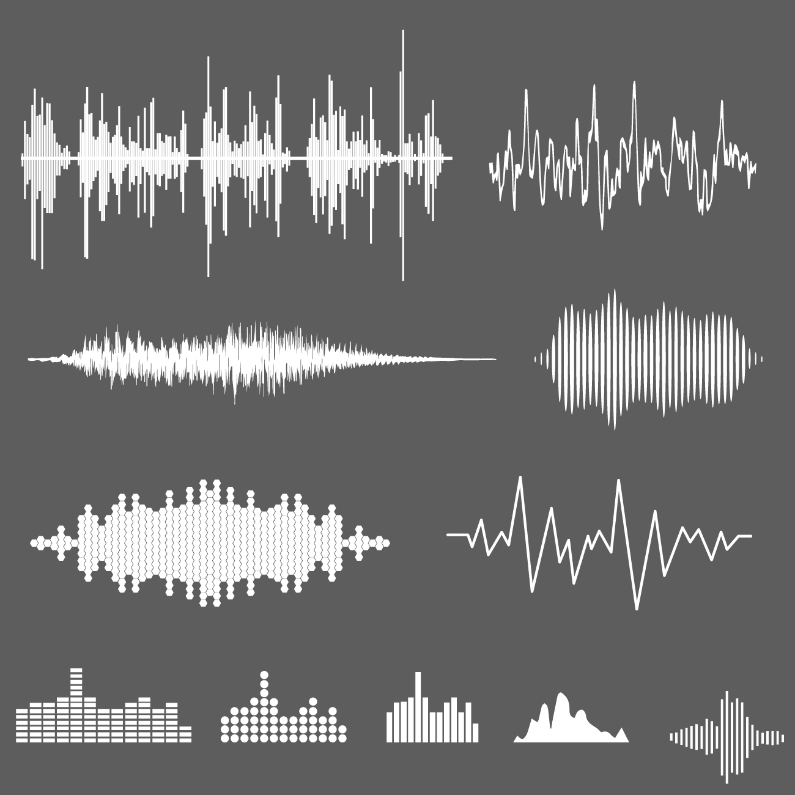

Calculadora de Ondas Sonoras
La calculadora de ondas sonoras es una herramienta diseñada para calcular:
Definición de onda sonora
Es una perturbación mecánica que se propaga a través de un medio como el aire, el agua o un sólido, transportando energía y sonido. Se produce por la vibración de las moléculas en un medio y se caracteriza por su frecuencia, amplitud y longitud de onda.
Representación gráfica de una onda sonora
En la imagen se muestran distintas representaciones gráficas de ondas sonoras. Cada una de estas formas representa cómo varía la presión del aire (o de otro medio) con el tiempo al propagarse el sonido. Las gráficas más irregulares representan sonidos complejos como la voz humana o la música, mientras que las más simétricas y repetitivas suelen representar tonos puros o sonidos constantes.
Estas formas de onda permiten analizar características del sonido como la frecuencia (qué tan agudo o grave es), la amplitud (qué tan fuerte es el sonido) y su forma general (que indica si es un tono puro o complejo). Este tipo de visualizaciones son comunes en programas de edición de audio y ayudan a comprender cómo viaja y se comporta el sonido.
¿Cómo identificar si un sonido es agudo, grave o complejo?
🔊 Frecuencia
Sonido agudo: Alta frecuencia. Las ondas están muy juntas. Ejemplo: silbido.
Sonido grave: Baja frecuencia. Las ondas están más separadas. Ejemplo: tambor.
🎵 Complejidad
Tono puro: Forma de onda regular y suave. Ejemplo: nota de diapasón.
Sonido complejo: Forma de onda irregular con muchos picos. Ejemplo: voz humana o música real.
👁️ En la imágen puedes ver
Las ondas irregulares representan sonidos complejos. Las ondas con patrón claro y repetitivo son más puras. Las más comprimidas son agudas, y las más anchas, graves.
🔈 Prueba de sonido
A continuación, puedes reproducir un sonido y ajustar su volumen para experimentar cómo cambia la percepción auditiva. Esta prueba te permite comprender la relación entre el volumen y la amplitud de la onda sonora:
- Al subir el volumen, se percibe un sonido más fuerte, lo que en términos físicos corresponde a una mayor amplitud de onda.
- Al bajar el volumen, se reduce la intensidad del sonido, reflejando una amplitud menor.
Esta prueba sirve como un primer acercamiento para vincular la teoría con la experiencia sensorial del sonido